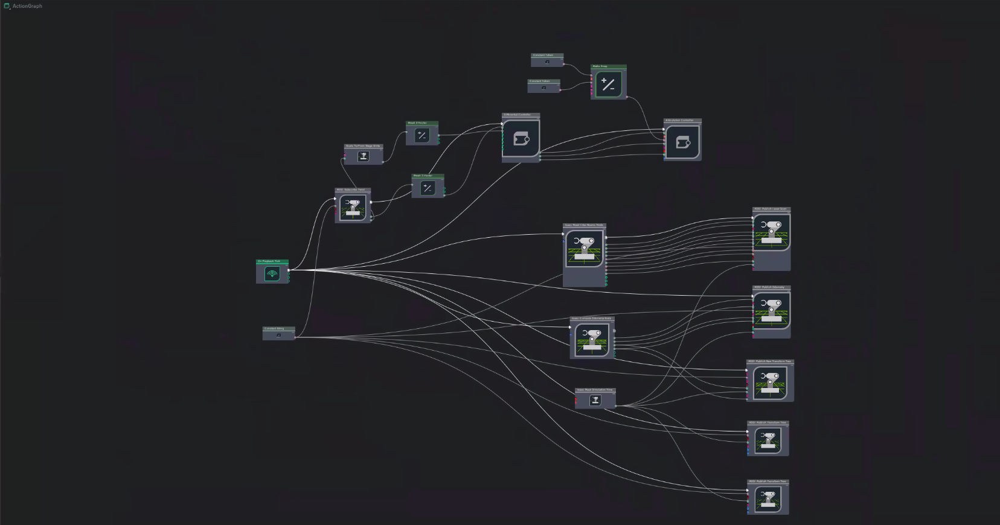
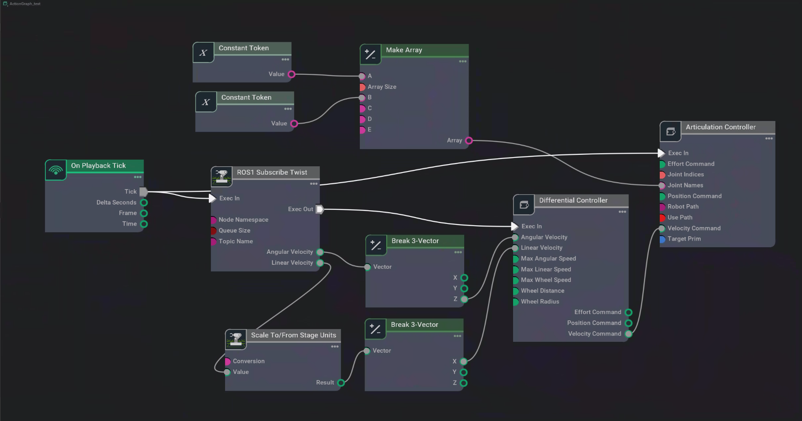
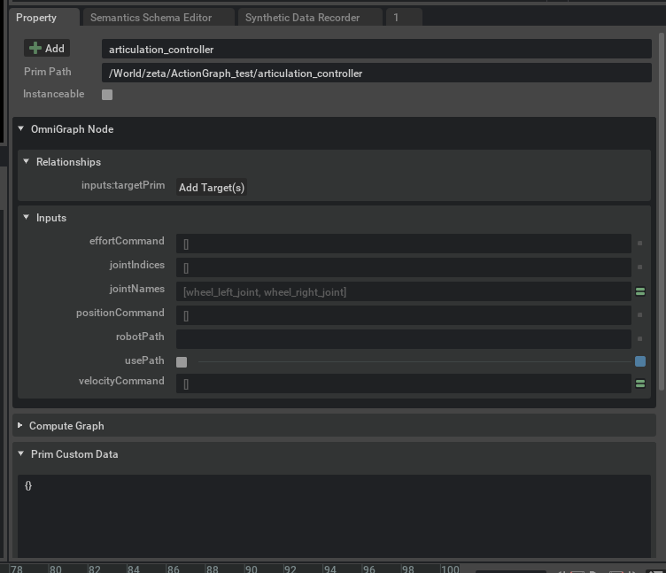
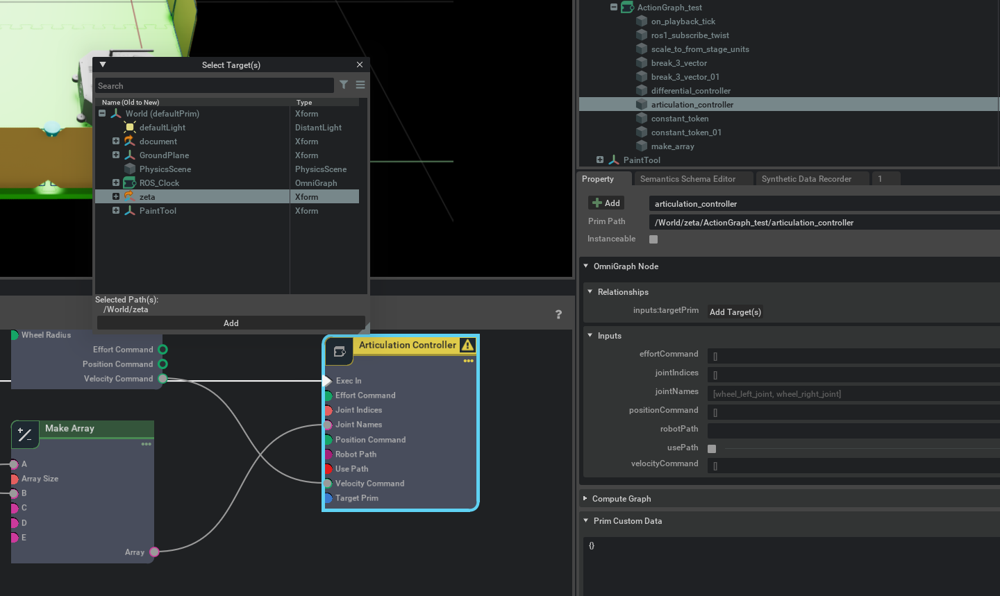

Action Graph
Action Graphs allow us to form OmniGraph (OG) nodes. Similar to how we have multiple Topics within our robot and use different nodes to communicate with the robot, we simulate ROS bridges and subscribe to a ROS twist Message and pipe the data to the controllers that can drive the robot around. (Note) Twist Message are message type from ROS that contains Linear and Angular Velocity information.
Our premade model provides Action Graph that includes robot drive functionality to all the sensor information settings as well. Due to this the action graph might seem complicated.
{kind=link}
Let us dissect this action graph and take a closer look at the action graph responsible for robot drive functionality.
{kind=link}
On Playback Tick Node: This node produces tick when simulation is “Playing”. With the simulation playing, any node connected to the tick node will execute their function. This node is usually the starting node for OG Nodes.
ROS Subscribe Twist Node: This node allows for subscription of ROS Twist message. Within our simulation, we sent the twist message to
cmd_velTopic. Hence specify the topicName of the node to/cmd_vel.You may check the topic list with
rostopic listin a new terminal.With our Subscribe node we may send ticks similar to On Playback Tick but only when the system recieves user input. This is especially important for tasks such as Differential Node, where we only want to execute when user Twist message is recieved.
Scale To/From Stage Unit Node: This node converts assets or inputs to stage unit.
Break 3-Vector Node: As mentioned previously, Twist messages contains 2 information. Angular and Linear velocity which are both 3-dimensional vectors. The differential controller node only recieves forward velocity and ration velocity in z-axis. We use Break3-vector to decompose the 3 dimensional vector and extract the corresponding elements before feeding them into the differential controller node.
Differential Controller Node: This node recieves the speed information of the robot from the user and calculates the wheel speed of the robot. This node requires users to input maxLinearSpeed, wheelDistance, and wheelRadius. But you may also set other parameters for specific purposes. Below are the parameters set for our zetabot.
Field
Value
Max Linear Speed
0.28
wheelDistance
0.22
wheelRadius
0.035
Articulation Controller Node: This node sends commands to a target robot by taking in the names or indices of the joints that needs to be moved. The commands are given either in Position Commands, Velocity Commands or Effort Commands. Our application only has to send information to the 2 wheel joints and recieve only Velocity Commands.
The two wheel joints can be represented as a Constant Token Node with
wheel_right_joint,wheel_left_jointfor each of the wheels and can be put into an array using the Make Array Node.After setting the wheels, we need to set the robot location for our articulation controller. When we open the controller properties:
We can see that
usePathis checked androbotPathis not defined. UncheckusePathand to set therobotPathclick Add Target button. This will prompt a Select Target(s) window.Select
zetawhich is our robot and press add to complete the setup.
{kind=link}
{kind=link}